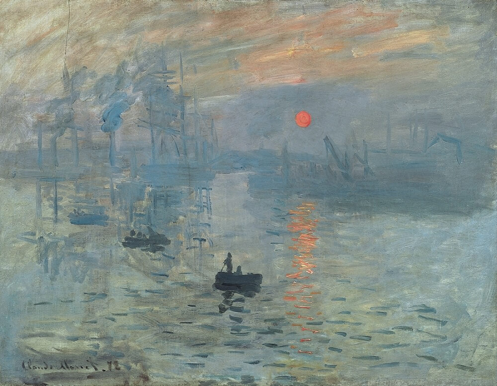
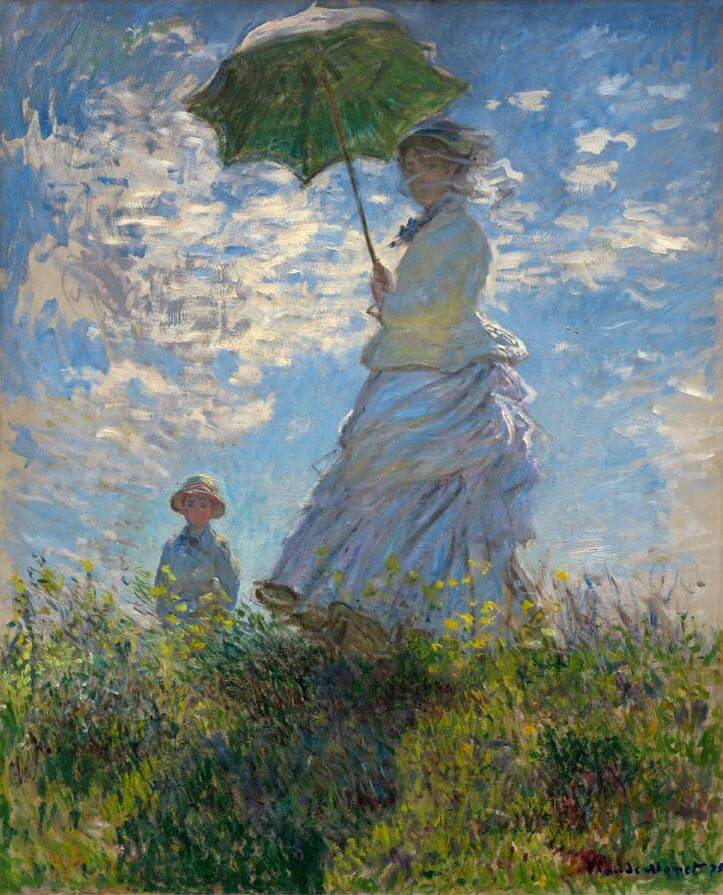
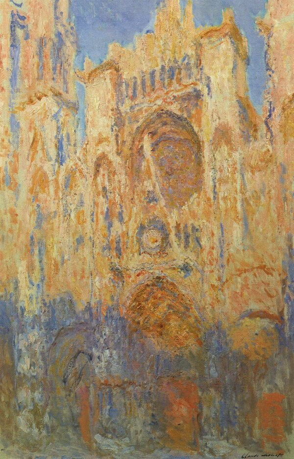

Famous Pieces of Claude Monet

Impression, Sunrise from 1872, was created from a scene in the port of Le Havre.
Monet depicts a mist, which provides a hazy background to the piece set in the French harbor. The orange and
yellow hues contrast brilliantly with the dark vessels, where little, if any detail is immediately visible to the audience. It
is a striking and candid work that shows the smaller boats in the foreground almost being propelled along by the
movement of the water. This has, once again, been achieved by separate brushstrokes that also show various colors
"sparkling" on the sea.

Woman with a parasol was painted outdoors, probably in a single session of several
hours' duration. The artist intended the work to convey the feeling of a casual family outing rather than a formal
portrait, and used pose and placement to suggest that his wife and son interrupted their stroll while he captured their
likenesses.

> The Water Lily Pond, from 1899, is exquisite in its composition of
background trees, weeping willow, and the bridge, which underwent many alterations up to 1910. The pond here is
literally obliterated by vegetation and lilies. It is composed of short brushstrokes - a familiar method during his mature
years. In a letter, Monet described how he had planted the water lilies for fun - he had never intended painting them,
however, once they established themselves they almost became his only source of inspiration. He wrote: "I saw, all of
a sudden, that my pond had become enchanted... Since then, I have had no other model."

Rouen Cathedral, Full Sunlight - is an atmospheric piece, which
was probably worked on alongside other canvases of different views of the historic building at the same time. The
series of paintings provides an inspiring collection of works of the cathedral at different times of the day and also
provides a record of the artist's experiences with light and atmosphere - a fascinating insight into what Monet was
actually experiencing.
Rouen Cathedral This one - Rouen Cathedral, Full Sunlight - is an atmospheric piece, which
was probably worked on alongside other canvases of different views of the historic building at the same time. The
series of paintings provides an inspiring collection of works of the cathedral at different times of the day and also
provides a record of the artist's experiences with light and atmosphere - a fascinating insight into what Monet was
actually experiencing.